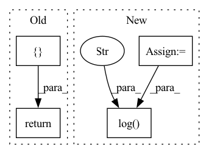

Pattern ID :2185
Before Change
def validation_step(self, batch, batch_idx):
x, y = batch
y_hat = self(x)
return { "val_loss": F.cross_entropy(y_hat, y)}
def validation_epoch_end(self, outputs):
avg_loss = torch.stack([x["val_loss"] for x in outputs]).mean()
tensorboard_logs = {"val_loss": avg_loss}After Change
def validation_step(self, batch, batch_idx):
x, y = batch
y_hat = self(x)
loss = F.cross_entropy(y_hat, y)
self.log("val_loss" , loss)
def test_step(self, batch, batch_idx):
x, y = batch
y_hat = self(x)In pattern: SUPERPATTERN
Frequency: 7
Non-data size: 4
Instances Fragment ID: 9314751
Project Name: pytorchlightning/lightning-bolts
Commit Name: 2664934c75bc7e823f4b4e5ae2b0487cf19a51a7
Time: 2020-10-12
Author: waf2107@columbia.edu
File Name: pl_bolts/models/mnist_module.py
M Class Name: LitMNIST
N Class Name: LitMNIST
M Method Name: validation_step(3)
N Method Name: validation_step(3)
M Parent Class: LightningModule
N Parent Class: LightningModule
M File Name: pl_bolts/models/mnist_module.py
N File Name: pl_bolts/models/mnist_module.py
M Start Line: 49
M End Line: 50
N Start Line: 44
N End Line: 46
Before Change
self.log("test/acc", acc, on_step=False, on_epoch=True)
self.log("test/iou", iou, on_step=False, on_epoch=True)
return { "loss": loss, "preds": preds, "targets": targets}
def configure_optimizers(self):
Choose what optimizers and learning-rate schedulers to use in your optimization.
Normally you"d need one. But in the case of GANs or similar you might have multiple.After Change
loss, _, proba, preds, targets = self.step(batch)
acc = self.test_accuracy(preds, targets)
iou = self.test_iou(preds, targets)[1]
preds_avg = (preds * 1.0).mean().item()
targets_avg = (targets * 1.0).mean().item()
self.log("test/loss", loss, on_step=True, on_epoch=True, prog_bar=False)
self.log("test/acc", acc, on_step=True, on_epoch=True, prog_bar=True)
self.log("test/iou", iou, on_step=True, on_epoch=True, prog_bar=True)
self.log(
"test/preds_avg" , preds_avg, on_step=True, on_epoch=True, prog_bar=False
)
self.log(
"test/targets_avg",
targets_avg,
on_step=True, Fragment ID: 9314757
Project Name: ignf/lidar-deep-segmentation
Commit Name: 1a601b558ff24755fbff075ff8d4f1dfaef09648
Time: 2021-10-11
Author: charles.gaydon@gmail.com
File Name: semantic_val/models/point_net_model.py
M Class Name: PointNetModel
N Class Name: PointNetModel
M Method Name: test_step(3)
N Method Name: test_step(3)
M Parent Class: LightningModule
N Parent Class: LightningModule
M File Name: semantic_val/models/point_net_model.py
N File Name: semantic_val/models/point_net_model.py
M Start Line: 243
M End Line: 253
N Start Line: 210
N End Line: 239
Before Change
def test_step(self, batch, batch_idx):
x, y = batch
y_hat = self(x)
return { "test_loss": F.cross_entropy(y_hat, y)}
def test_epoch_end(self, outputs):
avg_loss = torch.stack([x["test_loss"] for x in outputs]).mean()
tensorboard_logs = {"test_loss": avg_loss}After Change
def test_step(self, batch, batch_idx):
x, y = batch
y_hat = self(x)
loss = F.cross_entropy(y_hat, y)
self.log("test_loss" , loss)
def configure_optimizers(self):
return torch.optim.Adam(self.parameters(), lr=self.hparams.learning_rate)
Fragment ID: 9314754
Project Name: pytorchlightning/pytorch-lightning-bolts
Commit Name: 2664934c75bc7e823f4b4e5ae2b0487cf19a51a7
Time: 2020-10-12
Author: waf2107@columbia.edu
File Name: pl_bolts/models/mnist_module.py
M Class Name: LitMNIST
N Class Name: LitMNIST
M Method Name: test_step(3)
N Method Name: test_step(3)
M Parent Class: LightningModule
N Parent Class: LightningModule
M File Name: pl_bolts/models/mnist_module.py
N File Name: pl_bolts/models/mnist_module.py
M Start Line: 64
M End Line: 65
N Start Line: 50
N End Line: 52